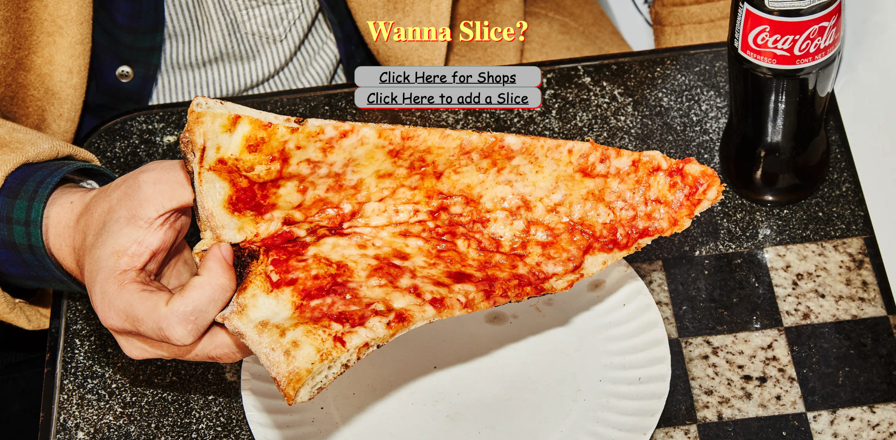

My Work

NYC Pizza is a web application that allows users to add and rate their favorite pizza slices from any of the five boroughs of New York City.
- Mongo DB
- Express
- EJS
- Node
- CSS

a REST API that provides quotes from Seinfeld characters George and Frank Costanza.
- PostgreSQL
- Express
- Node

A Drum machine where user can press a key on their keyboard and a specific drum will play
- HTML
- CSS
- JavaScript

A social media app where user's can create an account to share posts and picutres.
- Mongo DB
- Express
- React
- Node
- Bootstrap